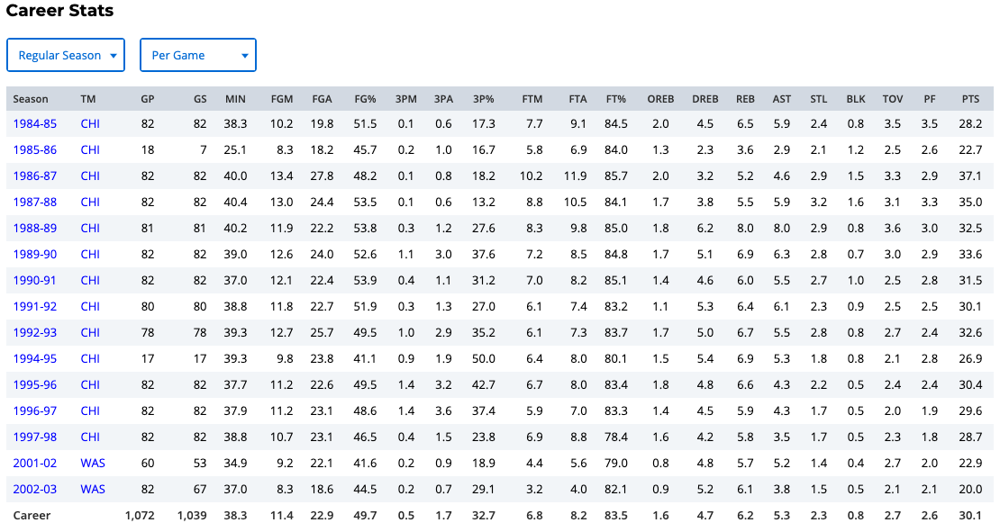

1 Science of Data and Data Science
This book serves as a main reference book for my MATH 4720 Statistical Methods and MATH 4740 Biostatistical Methods at Marquette University. Some topics can also be discussed in an introductory data science course. You’ll learn basic probability and statistical concepts as well as data analysis techniques such as linear regression using R computing software.
1.1 Statistics as Numeric Records
In ordinary conversations, the word statistics is used as a term to indicate a set or collection of numeric records as shown in Figure 1.1.

- Interestingly someone defines statistics as the only field where two experts, using identical data, may come to completely opposite conclusions Figure 1.2, which is true in some sense. We’ll see why later in this course. With the same data, different statistical methods may produce different results and lead to difference conclusions.

1.2 Statistics as a Discipline
- Forget about that useless definition.
From Wiki, Statistics is formally defined as the discipline that concerns the collection, organization, analysis, interpretation and presentation of data.
Statistics is a Science of Data.
A science of data using statistical thinking, methods and models.
There might be another science of data. I’m not saying statistics is THE science of data.
1.3 Difference between Statistics and Data Science


- Investopedia defines Data Science as a field of applied mathematics and statistics that provides useful information based on large amounts of complex data or big data.
- But Dan Ariely, a famous behavioral economist at Duke once asked: So what on earth is DS?
- Maybe nobody has the exactly correct answer.
1.4 UC Santa Cruz Department of Statistics Courses

- This shows statistics courses offered by UC Santa Cruz, the university I graduated from.
- You can see that statistics focuses much more on data analysis, methods and models.
- The stats department doesn’t talk a lot about data collection, organization, data presentation or data visualization.
1.5 Data Science Is Now a Broader View of Statistics
- Collection, organization, analysis, interpretation and presentation of data.

- Data science is more like a broader view of statistics.
- Because again, in typical statistics departments, we don’t really teach or do much research on data collection, cleaning, storage, database management, and data visualization, which all are now a part of DS.
- Statistics focuses very much on data analysis and modeling.
- Anyway, please don’t worry about the names.
- The important thing is you learn useful methods to help you analyze your data no matter what it is called, statistics or data science.
1.6 What Do We Learn In this Course

- In particular, we will spend most of the time talking about probability and statistical inference methods.
1.7 We Focus On Statistical Inference
- We spend most of time on various statistical methods for analyzing data.
- Learn useful information
- about the population we are interested
- from our sample data
- through statistical inferential methods, including estimation and testing
- Don’t worry if you have no idea what these terms are.
- These are what we will discuss throughout the course, and I’ll explain each term in detail later in class.